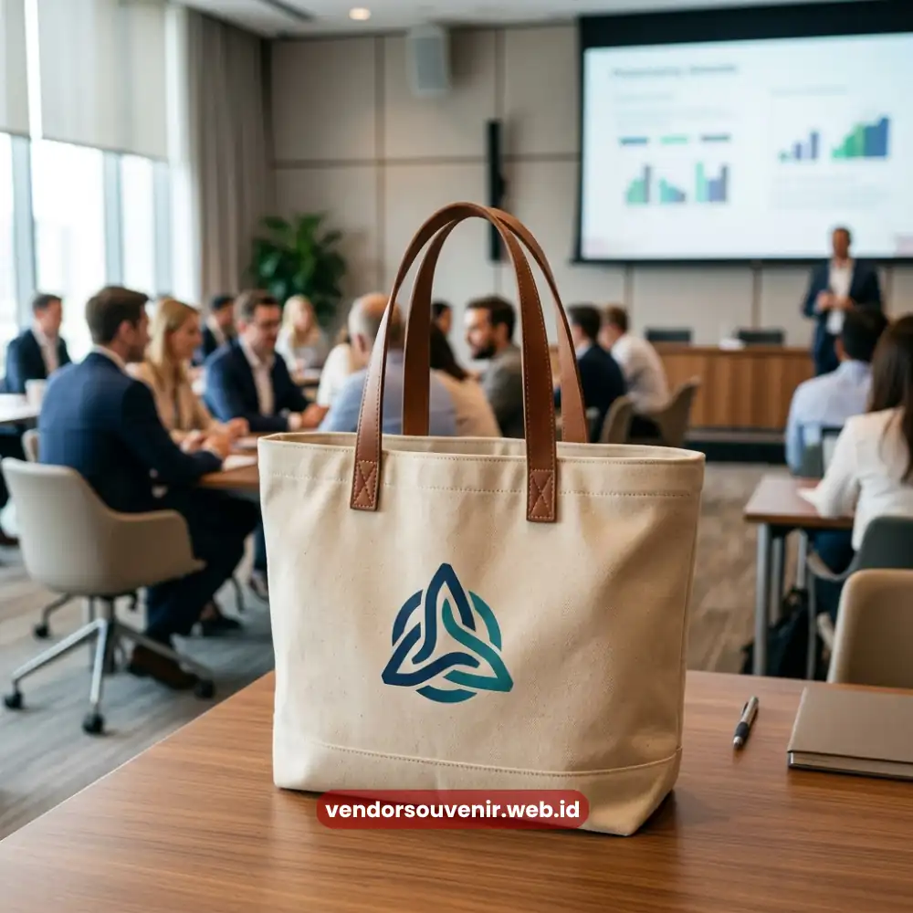

Daftar Isi
Goodie bag seminar kantor adalah paket perlengkapan dan souvenir yang dibagikan kepada peserta saat registrasi sebagai simbol apresiasi sekaligus identitas acara.
Kehadirannya bukan sekadar formalitas, melainkan representasi awal dari standar profesionalisme perusahaan penyelenggara.
Isi yang tepat guna, rapi, dan relevan dengan tema seminar akan langsung membentuk persepsi positif peserta sejak menit pertama mereka duduk di ruang acara.
- Goodie bag membentuk kesan pertama sekaligus memperkuat citra profesional perusahaan.
- Isi yang relevan meningkatkan fungsi praktis sekaligus nilai memorabilia bagi peserta.
- Kustomisasi logo dan warna korporat memperkuat konsistensi branding acara.
- Perencanaan anggaran yang matang membuat goodie bag tetap berkualitas tanpa membengkakkan biaya.
Mengapa Goodie Bag Menentukan Kesan Pertama Seminar Anda?
Momen registrasi adalah titik kontak pertama antara peserta dan penyelenggara acara.
Pada fase inilah goodie bag memegang peran penting, karena barang yang diterima peserta secara tidak langsung mencerminkan seberapa serius perusahaan mempersiapkan acaranya.
Goodie bag yang tertata rapi, dengan kombinasi warna yang konsisten dan kemasan yang tidak asal-asalan, memberi sinyal bahwa seminar tersebut dikelola secara profesional.
Selain aspek visual, goodie bag juga berfungsi sebagai jembatan emosional antara peserta dan brand perusahaan.
Peserta yang menerima paket berkualitas cenderung lebih terbuka dan antusias mengikuti sesi seminar dari awal hingga akhir.
Efek psikologis semacam ini sering luput dari perhatian panitia, padahal dampaknya cukup signifikan terhadap tingkat partisipasi aktif selama acara berlangsung.
Apa Saja Isi Goodie Bag yang Relevan untuk Peserta Korporat?
Isi goodie bag idealnya disesuaikan dengan kebutuhan fungsional peserta selama seminar berlangsung, bukan sekadar barang tempelan tanpa nilai guna.
Notebook dan pulpen tetap menjadi kombinasi klasik yang relevan, terutama untuk seminar dengan sesi diskusi atau pencatatan materi yang intensif.
Kedua item ini menawarkan keuntungan langsung dan juga berperan sebagai alat branding yang efisien ketika dicetak dengan logo perusahaan.

Tote bag praktis sebagai kemasan goodie bag fungsional
Tumbler atau botol minum juga semakin banyak dipilih karena fungsinya yang praktis dan daya pakainya yang panjang.
Berbeda dengan barang sekali pakai, tumbler cenderung dibawa peserta ke kantor masing-masing setelah acara selesai, sehingga logo perusahaan penyelenggara terus terlihat dalam jangka waktu lama.
Tas jinjing atau tote bag berkualitas turut melengkapi paket ini sebagai wadah utama sekaligus item yang nyaman digunakan kembali dalam aktivitas sehari-hari.
Selain barang fungsional, sentuhan tambahan seperti kartu nama meja, name tag, atau kudapan ringan kerap disertakan untuk melengkapi pengalaman peserta secara menyeluruh.
Kombinasi barang-barang tersebut menciptakan paket yang terasa utuh dan tidak sekadar tempelan promosi semata.
Bagaimana Goodie Bag Memperkuat Branding Perusahaan Anda?
Setiap item dalam goodie bag adalah kanvas kecil untuk memperkuat identitas visual perusahaan.
Konsistensi warna korporat, penempatan logo yang proporsional, serta pemilihan tipografi pada kemasan turut menentukan seberapa kuat kesan branding yang tertanam di benak peserta.
Semakin rapi eksekusi visualnya, semakin besar pula peluang peserta mengingat perusahaan penyelenggara jauh setelah acara berakhir. Branding yang konsisten pada goodie bag juga menciptakan efek jangka panjang.
Barang-barang seperti tumbler, notebook, atau tas yang terus-menerus digunakan oleh peserta pascaseminar berperan sebagai media promosi yang bergerak, memperluas jangkauan visibilitas merek ke lingkungan kerja atau komunitas peserta, tanpa adanya biaya tambahan untuk perusahaan.
Bagaimana Menyesuaikan Anggaran Goodie Bag dengan Skala Acara?
Perencanaan anggaran goodie bag idealnya dimulai dari jumlah peserta dan durasi acara, bukan sekadar mengikuti tren barang populer.
Seminar setengah hari umumnya cukup dilengkapi item ringkas seperti notebook, pulpen, dan tote bag, sementara acara dengan durasi penuh atau multi-hari biasanya membutuhkan tambahan item fungsional seperti tumbler atau perlengkapan pendukung lainnya.
Penyesuaian anggaran juga perlu mempertimbangkan kualitas material dibanding sekadar kuantitas barang.
Goodie bag dengan jumlah item sedikit namun berkualitas tinggi cenderung meninggalkan kesan lebih baik dibandingkan paket dengan banyak barang namun terkesan murah.
Prinsip ini penting dipegang agar investasi perusahaan pada goodie bag benar-benar memberikan nilai balik yang sepadan.

Hadiah Souvenir untuk Kebutuhan Korporat
Butuh Bantuan Merancang Goodie Bag Seminar Kantor?
Tim ahli kami siap membantu Anda menyusun perlengkapan eksklusif yang menarik.
Pilihan barang akan disesuaikan dengan ketersediaan budget dan kebutuhan Anda.
Seluruh desain akan kami selaraskan dengan identitas visual perusahaan Anda.
Dapatkan penawaran harga terbaik untuk pesanan massal!
FAQ Seputar Goodie Bag Seminar Kantor
Berapa jumlah item ideal dalam satu goodie bag seminar?
Jumlah ideal umumnya berkisar tiga hingga lima item fungsional, disesuaikan dengan durasi dan tema seminar agar tidak terkesan berlebihan namun tetap terasa lengkap.
Apakah goodie bag perlu dicetak logo perusahaan di setiap item?
Tidak selalu di setiap item, namun disarankan minimal pada item utama seperti tas dan notebook agar branding tetap konsisten tanpa terasa berlebihan.
Apakah goodie bag cocok untuk seminar internal skala kecil?
Sangat cocok, karena goodie bag tetap berfungsi memperkuat apresiasi terhadap peserta internal meskipun skala acara tergolong kecil hingga menengah.
Maroon Souvenir
Partner Corporate Gift terpercaya di Indonesia. Berpengalaman melayani ratusan perusahaan sejak 2018.
Lihat Portofolio Kami